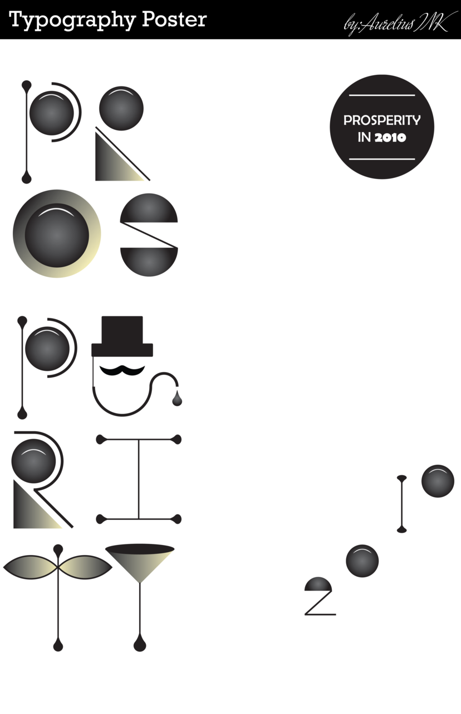

Wed, 18 Aug 2010 03:34:44 ·
neat designersof prosperity in 2010

Neat!Prosperity in 2010 Typography Poster Design.. All the Letters are shapes no fonts were used except for the top banner at the top. By: Joshua Galloway
jgraphic.tumblr.com